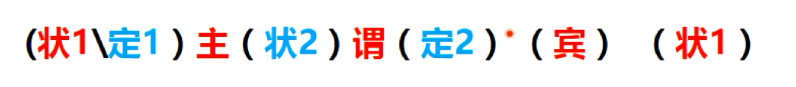
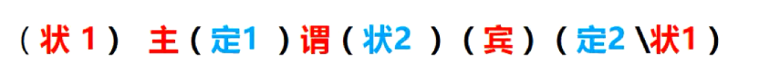
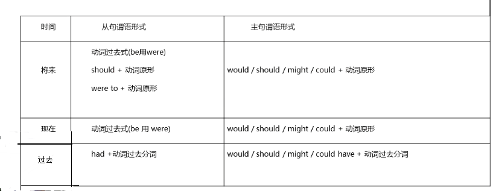

第一阶：中英文对切基本公式
（1）主干排序的运行算法：中英文中修饰主语、谓语、宾语的结构是相反的，中文修饰在前，英文的修饰在后，所以中英文切换就是对应的位置的变换
-
中文：

-
英文：

- 注意：这个切换公式中有个特殊情况不满足，英文宾语后的定语和状语，这里的状语很有可能当做状2，要放在谓语前
- I love the girl
who has long hair（定语）
very much（状语）
- 我
非常（状语）爱那个
长发的（定语）女孩
（2）一些约定：
- 中文中目前只有陈述句，不区分主动和被动
- 形容词+名词：看作整体，就代表名词或者主语
- 插入语，即用逗号等分隔的，可以出现在公式的每个地方（不属于原句的部分，是独立的）
- 中文中经常省略主语和谓语，英文则一定不会省略
（3）基本概念：
- 主干：主语+谓语+宾语（其中包含特殊的结构是主系表，“系”就是“是”，“表”就是“表现”，比如“她是美丽的”）
- 句子：主语+谓语（什么是句子：一句话是由主语和谓语组成的，宾语可有可无，因为中文经常忽略主语、谓语，所以在翻译中文时要先补全主语和谓语）
-
主语：句首的独立名词性结构（独立是指不在从句中，如名词、代词、分词、从句、it）
- 名词：In his eyes,
Jack is a liar
- 从句：
Living in the city is boring
- 代词：
That is right
-
谓语：主语后的第一个独立动词
The man who is singing in the car
is Jack
- 宾语：谓语后的第一个独立名词性结构（在句子中可以没有）
（4）内部排序的运行算法（即句子中的从句的排列规则）
- 规则一：倒序（who is singing in the car，倒过来就是，在车里唱歌）
- I know the man
who is singing in the car
- 我认识
在车里唱歌的那个人
-
规则二：并列不变序（并列，不仅包含and表达的并且，还包含转折、选择、递进）
-
在工作中没有激情也没有想法的人不会有进步
-
A man
without passion and ideas at work can not make any progress
（5）双黄蛋（也就是一个句子是由两个句子构成的，有多个主语，所以中英文切换时，在找主干前，要先找下是不是双黄蛋）
-
The creation of books is big progress for human being, but
the invention of computer is even more valuable
-
书的创造是人类的巨大进步, 但是
电脑的发明是更有价值的
（6）单黄蛋（由双黄蛋合并而来，也就是形成一个句子，主语只有一个，但可以有多个谓语和宾语）
-
You were, are and will always be in my heart.
（7）隐藏的双黄蛋（宾语从句，完全可以看成是两个句子）
-
I think
that（作为强调，连接两个句子）
she is right.
-
GRE：God Read English
A long view of the history of English colonies that became the United States has been
that
England's policy towards these colonies before 1763 was dictated by commercial interests
and that
a change to a more imperial policy
,dominated by militarist objectives,（插入语）
generated the tensions that ultimately led to the American Ravolution
第二阶：语法核心重建
（1）常见时态（上学时经常说的，相当于【一般时、进行时、完成时、完成进行时】和【现在、过去、将来、过去将来】的笛卡尔积4*4=16种，即一一组合。下面用几何逻辑重建时态）
- 一般现在时：is
- 一般过去时：was
- 一般将来时：will be
- 过去将来时：would be
- 现在进行时：is doing
- 过去进行时：was doing
- 将来进行时：will be doing
- 过去将来进行时：would be doing
- 现在完成时：has done
- 过去完成时：had done
- 将来完成时：will has done
- 过去将来完成时：would has done
- 现在完成进行时：has been doing
- 过去完成进行时：had been doing
- 将来完成进行时：will has been doing
- 过去将来完成进行时：would has been doing
（2）用几何逻辑重建时态（时态只有两种，而不是上面分成的16种之多之杂，【现在、过去、将来、过去将来】好判断，但【一般时、进行时、完成时、完成进行时】不好判断，所以分成点和段来判断）
- 点时态（表示某个时间点，而不是一段时间。体现【粗略的点：一般时、精确的点：进行时】）
- 一般现在时：is
- 一般过去时：was
- 一般将来时：will be
- 过去将来时：would be
- 现在进行时：is doing
- 过去进行时：was doing
- 将来进行时：will be doing
- 过去将来进行时：would be doing
- 段时态（表示一个时间段，也就是某个时间点之前或之后的一段时间，而不是具体的时间点。体现【完成时】）
- 现在完成时：has done
- 过去完成时：had done
- 将来完成时：will has done
- 过去将来完成时：would has done
- 点时态+段时态（表示某个时间点之前或之后的一段时间，同时包含这个时间点。体现【完成进行时】）
- 现在完成进行时：has been doing
- 过去完成进行时：had been doing
- 将来完成进行时：will has been doing
- 过去将来完成进行时：would has been doing
（3）虚拟（假的假设，即不可能的事，与真实相反，用虚拟的时候就和点和段的关系不大了，而且对于主句和从句时态是不同的。之所以用虚拟，是为了表示一种情绪，也可以表示一种愿望、建议）

- 情绪：If I
were(用错误的语法，时态和人称都错写，I用were就是为了表示这是虚拟，不是真的) you, I will kill him
- 愿望：What
would you do with 100 million dollars
- 建议：It is time that we
went to school
- 建议：I suggest that she
should（可以、应该省略，为了表示人人平等，should有命令的意味） go to school
- 希望：I wish I
could fly
（4）定语从句
- 定：也就是划个范围
- I like the girl
who has long hair
- 定语从句分为两种：对人用who、对物用which（像when、why、where、whose、how等都是由这两种演变而来的）
- I like the girl
who has long hair
- I love the car
which is big
- 定语从句的形成：合并同类项
-
I know
the man 和
The man is crying in the car
-
I know
the man the man is crying in the car
-
I know
the man who is crying in the car
- who、which演变得到whose、where、when、why、how
-
I really hate
the city 和 In
the city I meet him
-
I really hate
the city in
which I meet him
-
I really hate
the city
where I meet him
-
这样就得出了相应的结果
- where：in/on which（有时外国人也不知道用in which还是on which表示在哪儿，反正是地点，直接简写为where）
- when：on which（on which表示在什么时间，简写为when）
- whose：who's / which's（who's和which's表示什么的，简写为whose，既能代表人的又能代表物的）
- why：for which（for which表示为了什么，简写为why）
- whom：当合并的同类项在第二个句子中作为宾语，写whom更好，而且由于是宾语还可以省略不写
- that：当分不清用who还是which时，都可以用that代替（但非限制性定语从句中不能用，in which也不能用，在强调时最好用that）
-
非限制性定语从句（很特别，代表不是用来划范围的，所以从根本来说不是定语从句，而是插入语。任何定语从句都可以写成插入语，也就是非限制性定语从句）
- I like my father, who is good to me.（这里的非限制性定语从句，只是用来补充说明，而不是划范围）
- 不能写成 I like my father who is good to me.（逗号是必须的，不然意思就变成了我喜欢对我好的父亲，就会存在有多个父亲的歧义，这里并不是要划范围）
（5）状语从句（找准状语就行了，而就是因为太容易了，写作时尽量不要用状语从句）
- 时间状语：when、while
- 地点状语：where
- 原因状语：because、for、as、due to
- 目的状语：in order to、so that
- 条件状语：if、unless、as/so long as、lest、in case
- 结果状语：so、so that
- 让步状语：as if、although、though
- 方式状语：by the way、by means of
- 比较状语：than、not as、no sooner than
（6）独立结构（纯结构，简约之美，就是为了替代传统的、太容易而被托福等鄙视的状语从句）
- 纯：去掉废话（也就是去掉状语、主语，将谓语变化为分词，即主动的为ing形式、被动为ed形式、将来为to do形式）
-
When I was a boy, I fell in love with science
-
Being a boy, I fell in love with science
- 注意前后主语不一致时，要慎用纯结构
- Being a boy, my father thought me to swim.（错误。这里意味着父亲小时候教我游泳。明显逻辑不对）
- When I was a boy, my father thought me to swim.
- 前后主语不一致时，不能去掉主语，而且如果谓语后是形容词，还可以把being去掉
- If Sunday is OK, we'd like to go out
- Sunday being OK, we'd like to go out
- Sunday OK, we'd like to go out